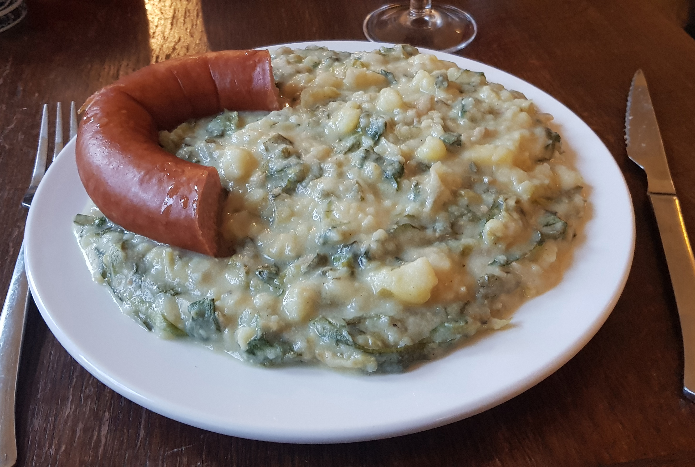

ANDIJVIE
Àn-dei-vie Stam-pot
Dish for 2 people.
Necessities:
- Half a kilo of potatoes
- 50 grams of bacon cubes
- 1 tablespoon of piccalilly
- 10 grams of unsalted dairy butter
- 250 grams of endive
First, peel the potatoes and cook them for about 20 minutes. While the potatoes are cooking, you bake the
bacon cubes.
Secondly, you add the butter to the potatoes. Start mashing it until it's fully mashed.
Thirdly, mix the endive through the mashed potatoes. When everything's fully mixed, your stew is done.
When serving it on a plate, add the bacon cubes and the piccalilly.
Enjoy the stew!
Want to know where the ingredients are cheapest? Here's a top 3 cheapest supermarkets:
- 1. Dirk
- 2. Jumbo
- 3. Plus
Don't have time or the patience to cook? Don't worry, we've got you covered.
Here's a list of restaurants where you can order this delicious stamppot: